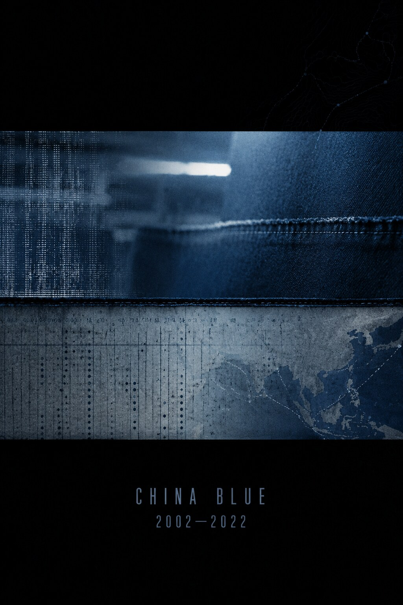
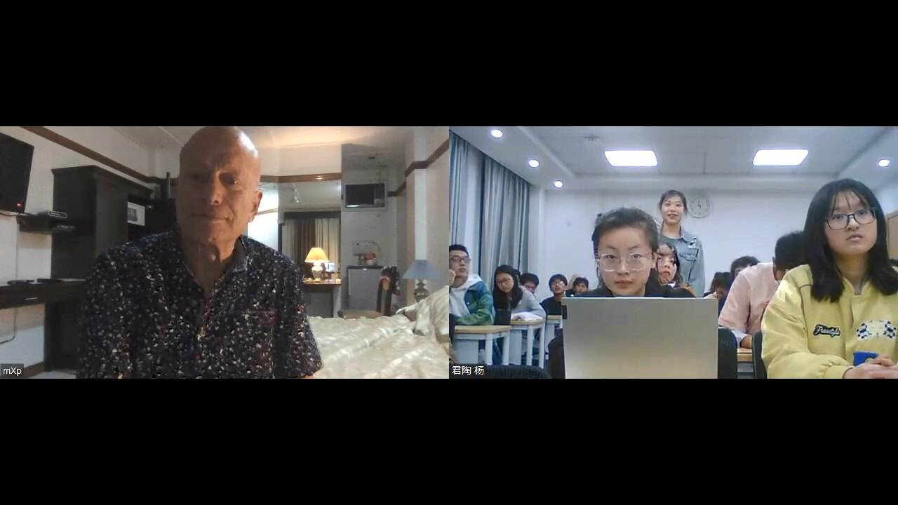
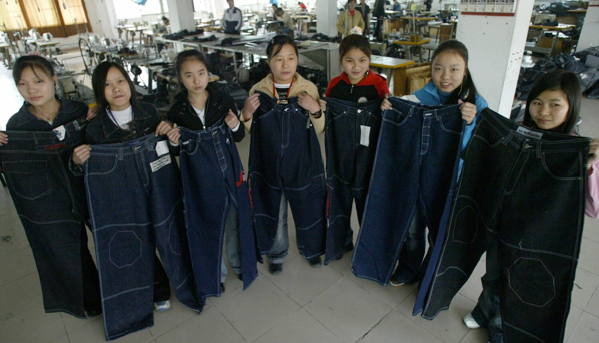
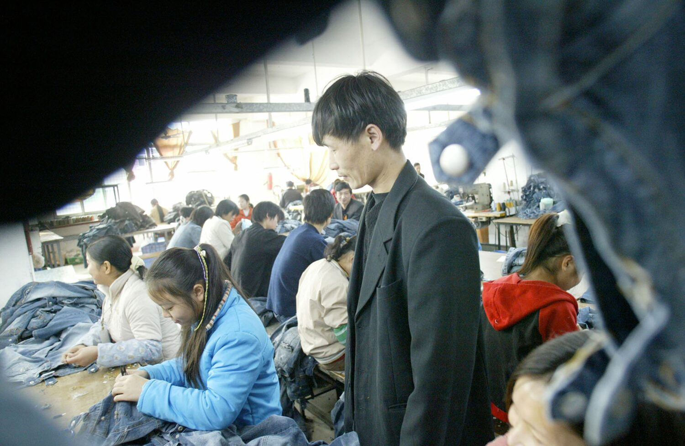
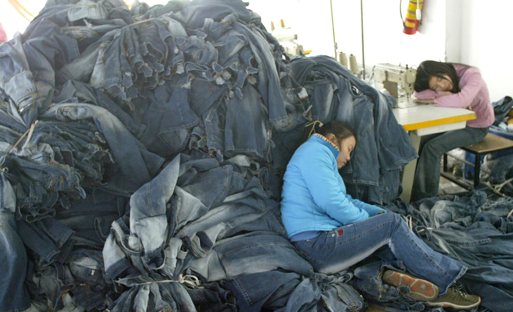

策展
{kind=link}

{kind=link}

{kind=link}

{kind=link}

{kind=link}

策展说明
《China Blue》是一部于二十一世纪初在中国拍摄、2005年完成的纪录片，聚焦广东沙溪一家牛仔裤工厂。影片的主人公是来自四川的打工女孩小莉（Jasmine）。导演以深入现场的观察性拍摄为基础，同时借助第一人称旁白、主观镜头与显著的叙事组织，呈现“厂妹”如何进入工厂，以及她们在生产线、宿舍与短暂休息时间中的生活状态。
此次策划放映以影片于2002年启动拍摄为时间起点，构成一次“拍摄二十周年”回顾。根据本次项目所掌握的放映记录，这也是影片第一次在中国境内获得完整放映。2008年，北京一家著名的地下文化空间原计划在奥运会期间的文化开放窗口中放映该片；活动虽曾获得许可，最终仍因便衣警察切断电源而被迫中止。
二十一世纪初，“中国制造”已经成为世界性的经济现象。然而，位于其背后的劳动关系、商品链条与不对称交换仍需要被反复追问。在代工企业密集的东南沿海，我们不仅要问“谁为谁制造”，也必须追问：西方投资者、品牌与消费者在国际资本主义链条中占据的优势位置，如何具体作用于全球南方劳工的身体、时间与生活机会？《China Blue》使这些通常被商品表面遮蔽的关系获得一种直接而切身的可见性。
作为纪录片的 China Blue
《China Blue》是 Micha X. Peled“全球化三部曲”的第二部。三部影片沿着生产—消费链条展开：Store Wars: When Wal-Mart Comes to Town考察沃尔玛进入美国小镇后引发的社区冲突；《China Blue》进入中国出口服装制造业；Bitter Seeds则转向印度棉农、转基因种子与债务危机。通过选择具有叙事张力的局部个案，Peled试图说明经济全球化如何以毛细血管式的权力形式，介入世界不同角落的日常生活。
影片于2005年进入多伦多国际电影节与阿姆斯特丹国际纪录片电影节等国际影展，并获得IDFA的 Amnesty Human Rights Award、PBS Independent Lens观众奖，以及美国人类学家协会视觉人类学学会颁发的 Award of Excellence。这些荣誉说明影片同时跨越了纪录片节展、公共电视与视觉人类学的评价体系。
依赖理论可以为影片提供一组重要的分析坐标，但它并不足以穷尽影片所展示的复杂关系。影片使我们看到：经济边陲如何在强烈的发展诉求中进入由跨国品牌主导的商品链，并以廉价劳动力争取出口竞争力。所谓“依附性发展”的收益在跨国公司、地方政府、工厂经营者与劳动者之间极不均衡地分配，而生产风险与时间压力则不断向供应链末端转移。
在这一政治经济分析之外，影片也具有异乎寻常的感性结构。Peled把粗粝的现场影像与少女工人的私人心境交织起来；手持摄影、受限条件下的拍摄、第一人称旁白、主观镜头与经过组织的情节进程，共同使影片游移于直接电影、人物研究和行动主义纪录片之间。它并未把工人简化为全球化的被动受害者，而是持续捕捉她们的友谊、愿望、幽默与微小抵抗。
作为行动者的导演 Micha X. Peled
Micha X. Peled是一位出生于以色列、长期在旧金山生活与工作的纪录片导演。他移居美国后曾从事进口贸易、自由新闻与和平运动工作，并参与二十世纪八十年代的 Nuclear Freeze movement。这些经历使他的电影实践始终与跨国商品流通、社会运动和媒介行动主义保持密切关系。
Peled曾任旧金山媒体监督机构 Media Alliance 的执行主任，并于1992年完成第一部电视纪录片 Will My Mother Go Back to Berlin?。此后，他又拍摄了 Inside God’s Bunker 与 You, Me, Jerusalem，逐步确立其关注移民、宗教冲突与政治共同体的创作路径。1999年，他成立非营利制作机构 Teddy Bear Films，并以“全球化三部曲”系统追踪消费、制造与原材料之间的跨国联系。